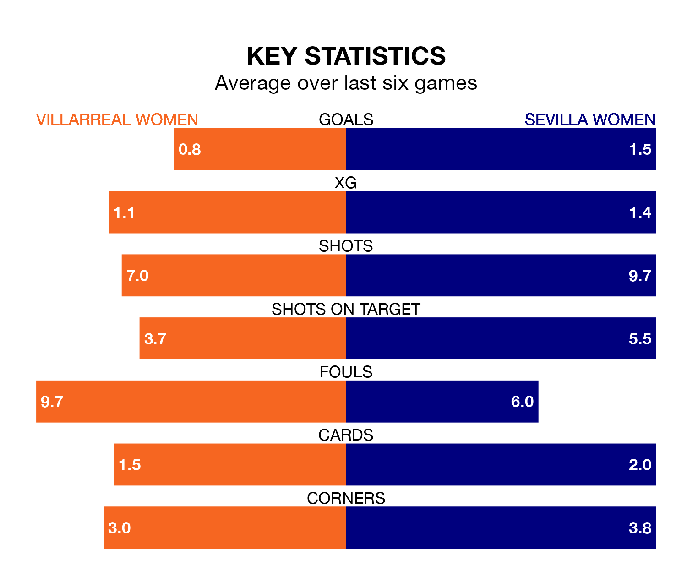

Villarreal Women face Sevilla Women at Ciudad Deportiva del Villarreal on Sunday lunchtime looking to secure a first win in seven Liga F games.
Villarreal have lost three and drawn three matches since they last earned three points – against Valencia Women on February 10.
They face a Sevilla side who have won two and drawn one over that time.
With 20 goals in 23 games so far this season, Villarreal are the league's third-lowest scorers with 0.9 goals per game. And they are conceding more than average, letting in 43 goals at a rate of 1.9 per game.
Sevilla, meanwhile, are above average scorers, with 1.9 goals per game, compared to a league average of 1.6. They have conceded 2.0 goals per game.
In Cristina Martín-Prieto Gutierrez, the visitors have one of the league's most on-form strikers so far this season. She has notched 14 goals in 22 appearances, to sit third in the scoring charts.
Her goal rate of one every 137 minutes is quicker than that of Kayla McCoy, the home side's top scorer with a goal every 238 minutes, and a total of eight goals in 23 games.
Villarreal are 12th in the table after 23 games, of which they have won five and drawn six, earning 21 points.
Sevilla are five places ahead of Villarreal in seventh, with 11 wins and three draws putting them on 36 points.
In the last five years, Villarreal and Sevilla have played each other on five occasions. Villarreal won one of them and Sevilla the other.
On average, Villarreal scored 1.2 goals and Sevilla 2.4 in those matches.
Their last meeting was on January 20, when Sevilla won 3-1 at home.
Villarreal's last match was on April 13, a 5-1 loss against Barcelona Women, with McCoy getting the goal for Villarreal.
Sevilla lost 3-0 against Eibar Women last time out, also on April 13.
Updated: 11:31 (UTC), 15/04/24